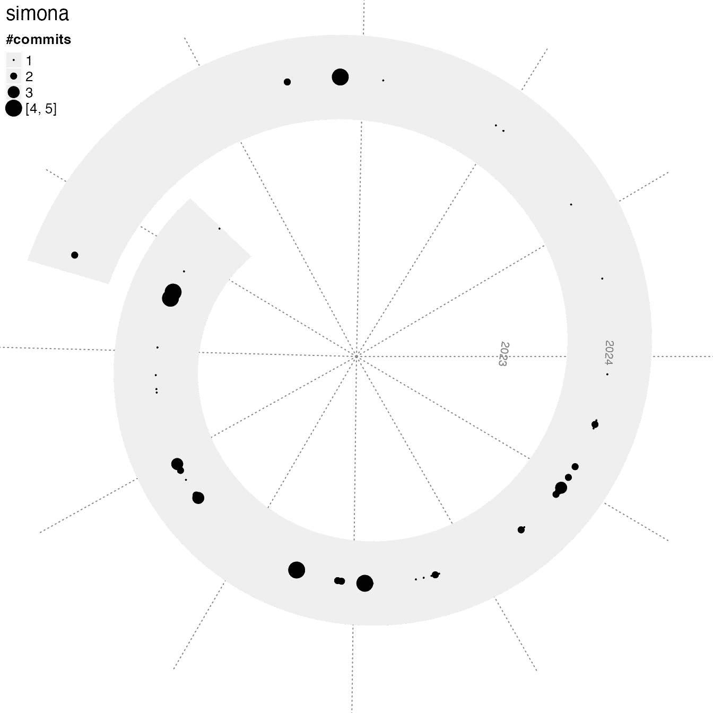
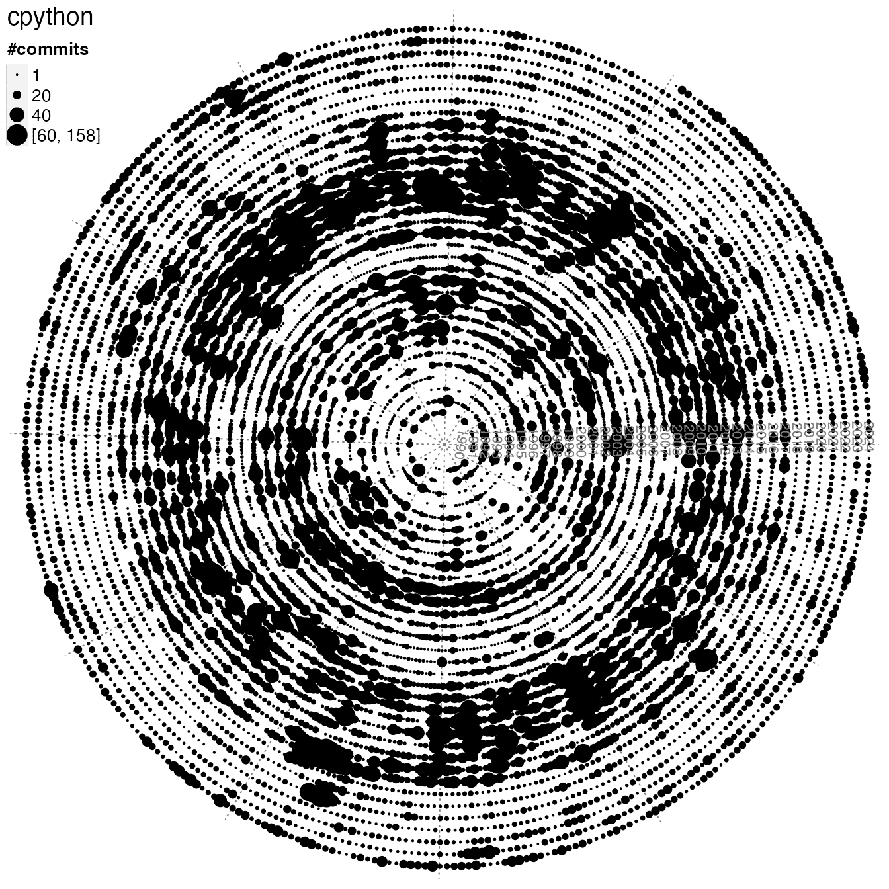
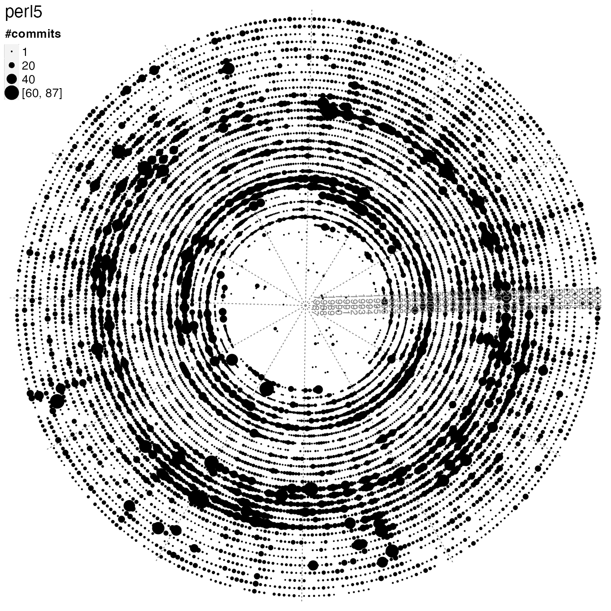
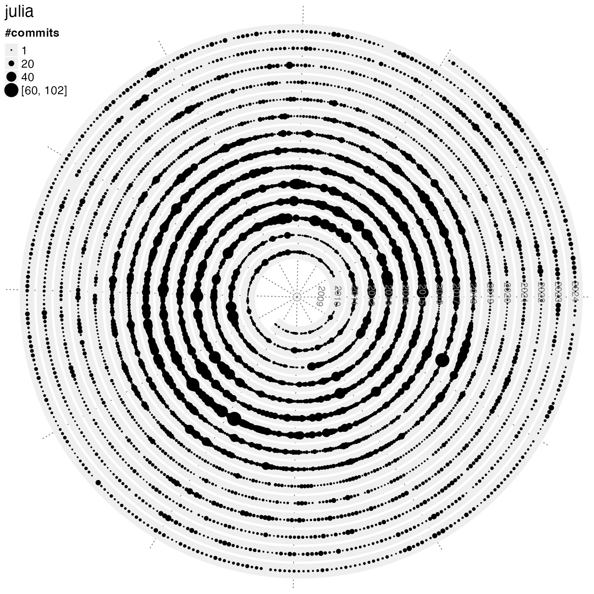

Spiral visualization on git commits of a git repo
Zuguang Gu (z.gu@dkfz.de)
2024-06-14
Source:vignettes/spiralize_git_commit.Rmd
spiralize_git_commit.RmdGitHub commits
This example visualizes my GitHub daily commits from 2013-04-18 to 2021-07-01. The data is retrieved by the following code:
repos = c("GlobalOptions", "GetoptLong", "circlize", "bsub", "pkgndep", "ComplexHeatmap", "EnrichedHeatmap",
"HilbertCurve", "gtrellis", "cola", "simplifyEnrichment", "InteractiveComplexHeatmap", "spiralize", "rGREAT")
df_all = data.frame(commits = numeric(0), date = character(0), repo = character(0))
for(r in repos) {
# go to each repo folder
setwd(paste0("~/project/development/", r))
df = read.table(pipe("git log --date=short --pretty=format:%ad | sort | uniq -c"))
colnames(df) = c("commits", "date")
df$repo = r
df_all = rbind(df_all, df)
}
df_all$date = as.Date(df_all$date)
start = min(df_all$date)
end = max(df_all$date)
d = start + seq(1, end - start + 1) - 1
n = numeric(length(d))
nl = lapply(repos, function(x) numeric(length(d)))
names(nl) = repos
for(i in seq_len(nrow(df_all))) {
ind = as.double(difftime(df_all[i, "date"], start), "days") + 1
n[ind] = n[ind] + df_all[i, "commits"]
nl[[ df_all[i, "repo"] ]][ind] = nl[[ df_all[i, "repo"] ]][ind] + df_all[i, "commits"]
}
lt = list(d = d, n = n, nl = nl)Here d is a vector of dates, n is a vector of daily commits of all packages, and nl is a list of vectors of commits of individual packages.
lt = readRDS(system.file("extdata", "github_commits.rds", package = "spiralize"))
d = lt$d
n = lt$n
nl = lt$nlI will use points to visualize commits. I first define a simple function to map between commits to point sizes.
calc_pt_size = function(x) {
pt_size = x
pt_size[pt_size > 20] = 20
pt_size[pt_size < 2 & pt_size > 0] = 2
pt_size
}Next I make the plot for the total commits and commits for individual pacakges. It is actually very easy to see in which period the package was mostly actively developed.
xlim = range(d)
pl = list()
pl[[1]] = grid.grabExpr({
spiral_initialize_by_time(xlim, verbose = FALSE)
spiral_track()
spiral_points(d, 0.5, pch = 16, size = unit(calc_pt_size(n), "pt"))
grid.text("All packages", x = 0, y = 1, just = c("left", "top"))
})
for(i in order(sapply(nl, sum), decreasing = TRUE)) {
pl[[ names(nl)[i] ]] = grid.grabExpr({
spiral_initialize_by_time(xlim, verbose = FALSE)
spiral_track()
spiral_points(d, 0.5, pch = 16, size = unit(calc_pt_size(nl[[i]]), "pt"))
grid.text(names(nl)[i], x = 0, y = 1, just = c("left", "top"))
})
}
library(cowplot)
plot_grid(plotlist = pl, ncol = 4)
The spiral_git_commits() function
spiral_git_commits() wraps the code in the previous section. The first argument in the function should be the path of a local git repository. The following shows commit histories of some of my R packages.
spiral_git_commits("~/project/development/ComplexHeatmap")
spiral_git_commits("~/project/development/circlize")
spiral_git_commits("~/project/development/rGREAT")
spiral_git_commits("~/project/development/simona")
spiral_git_commits("~/project/development/spiralize")
Let’s check the development activity of several programming languages:
spiral_git_commits("~/test/r-source", commits_range = c(1, 60))
spiral_git_commits("~/test/cpython", commits_range = c(1, 60))
spiral_git_commits("~/test/perl5", commits_range = c(1, 60))
spiral_git_commits("~/test/julia", commits_range = c(1, 60))